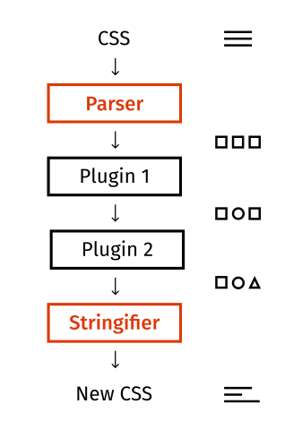

Stylelint
CSS Linting
By
Pete Levine
/
@petelevinea
PostCSS

Demo
Helpful Links
SlideDeck:
http://blog.petelevi.com/slidedecks
Facebook: Improving CSS Quality
https://code.facebook.com/posts/879890885467584
https://github.com/postcss/postcss
http://stylelint.io/
Specificity
https://developer.mozilla.org/en-US/docs/Web/CSS/Specificity
https://www.w3.org/TR/css3-selectors/#specificity